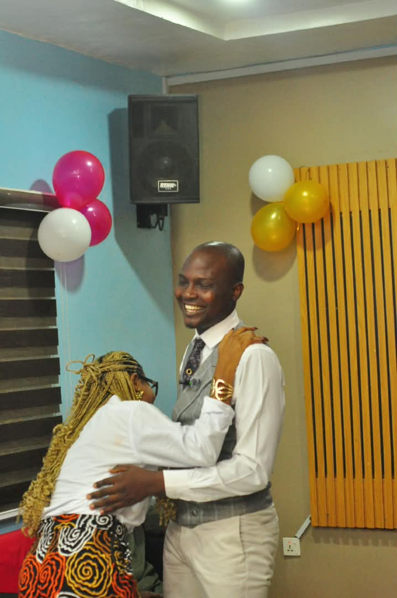

Ours is a beautiful story of friendship, faith, and a love that blossomed when we least expected it.
We had always been friends, united by our love for God and our commitment to serving Him in the same church. Although we served as associate pastors at different church stations, our paths often crossed during national meetings. Whenever we met, we would naturally find ourselves sitting together, talking about almost everything. He was already the well-known Pastor Promise of FlamesHouse Church, a man recognised for his fervent prayers and supernatural demonstrations of God's power. Little did we know that beyond the friendship we shared, something beautiful was quietly unfolding.
Then came the COVID-19 pandemic. With everyone returning to our mother church, we began seeing each other more frequently. Our casual conversations and occasional gist gradually became more meaningful, and our friendship grew deeper. Somewhere along the way, the connection began to feel different. The signs were becoming harder to ignore, and it was increasingly clear that what we shared was more than an ordinary friendship.
I remember one particular Sunday vividly. I arrived at church and found him already there, busy making arrangements. Our eyes met, but somehow, that moment felt different. I cannot quite explain it, but I suddenly began to see him in a new light. It was as though something had shifted, and the familiar face I had always known suddenly carried a different kind of meaning.
Soon, our conversations moved beyond our usual face-to-face encounters to online chats. The friendship became warmer, the connection stronger, and before long, he made his intentions known and asked me out.

January 2021 marked the beginning of a beautiful new chapter in our lives. We went on our first official date, and what had started as friendship gradually blossomed into a love story we are grateful to be living today.
Looking back, I realise that some of the most beautiful love stories do not begin with grand gestures or dramatic encounters. Sometimes, they begin with friendship, shared laughter, familiar conversations, and two hearts slowly discovering what God has been writing all along.
From church friends to soulmates, from casual conversations to intentional love, and from our first date in January 2021 to this beautiful moment, our journey has been one of love, growth, faith, and God's amazing grace.
FOREVER TOGETHER! ❤️
Promise & Bethel